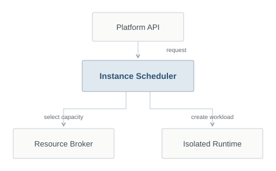
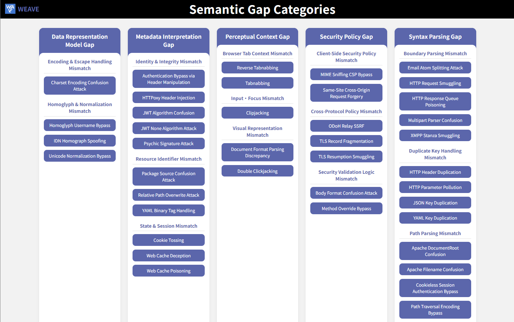
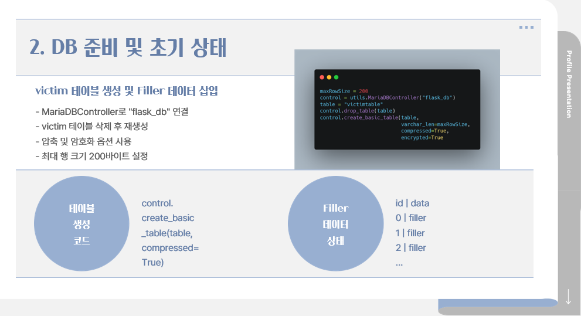

DEF CON 34 / Las Vegas / 2026
CTF Finalist
Competed in the finals with The Seoul Sauna Shogunate
7th in the qualifier / 8,641 points
Security Researcher / Seoul
Web & cloud security research
CTF infrastructure development
I research web and cloud security and create CTF challenges at ENKI WhiteHat
Currently building MSGCTF Cloud Platform with the team

DEF CON 34 / Las Vegas / 2026
Competed in the finals with The Seoul Sauna Shogunate
7th in the qualifier / 8,641 points
DEF CON 34 / Demo Labs / 2026
Presented GnawLab, an open-source AWS security lab
August 7 & 8 / Las Vegas Convention Center
Current work & research
A CTF operations platform connecting challenge deployment, team instances and service monitoring

Component repositories
 Open-source AWS security lab
Open-source AWS security lab
An open-source lab that recreates real-world AWS security incidents with Terraform
Contributed an AWS Bedrock Agent scenario and co-presented at DEF CON 34 Demo Labs
Contribution Trust boundaries between RAG knowledge bases and agents

A knowledge platform for Semantic Gap vulnerabilities caused by differing interpretations between components
Defined the research scope and organized cases into a root-cause taxonomy
Role Research scope & taxonomy / WhiteHat School, 3rd cohort

Undergraduate research into size differences produced by database compression
Built a MariaDB environment with Docker and examined measurement noise and reproducibility
Role Research & experiment setup / MariaDB, Python, Docker
Research, challenge design & operations
Turning web and cloud security research
into CTF challenges and hands-on labs
HACKTHEON Sejong 2026
Two Web challenges / Qualifier, April 25
Lead organizer / Web author
Led planning and operations for a qualifier with 108 teams and 315 participants
Authored three Web challenges: Edge Gate, INVISIBLE and MJSEC Forge Console
Founder / First president
Founded Myongji University’s security club and led its early operations
Organized campus CTF and programming contests, built competition platforms and co-organized MSG CTF
Information security specialist
Operated security appliances, managed security policies and supported monitoring
Reported internal web vulnerabilities and developed a browser policy management utility
Repositories, documentation & records
2026
A security research workflow project for managing runs and findings
Run and finding models / API contracts / CI validation
2025
A competition platform connecting submissions, scoring, leaderboards and Discord operations
Platform development and integration / Competition operations / Web challenges
2025
A club website and deployment environment for a learning management service
Project management / React & Vite / Automated deployment / Security checks
2025
A browser extension and Django REST backend for malicious URL detection
DevOps / Docker deployment / BreakCAPTCHA research
2024 ~ 2025
A programming contest leaderboard and operations tool using Baekjoon submission records
Django / Submission validation & scoring / GCP deployment
2022 ~ 2023
A Windows utility for managing browser developer-tools policies
Python / Windows policies / PyInstaller distribution
Results & write-ups
1st place
156 participants
1st place
Individual Web category
Excellence Award
Security tooling & policy proposal
Education & toolkit